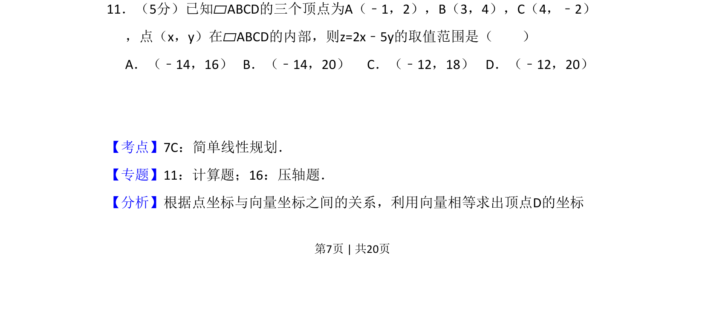
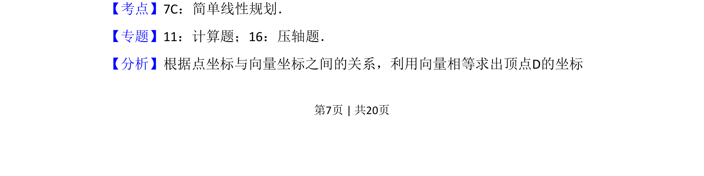
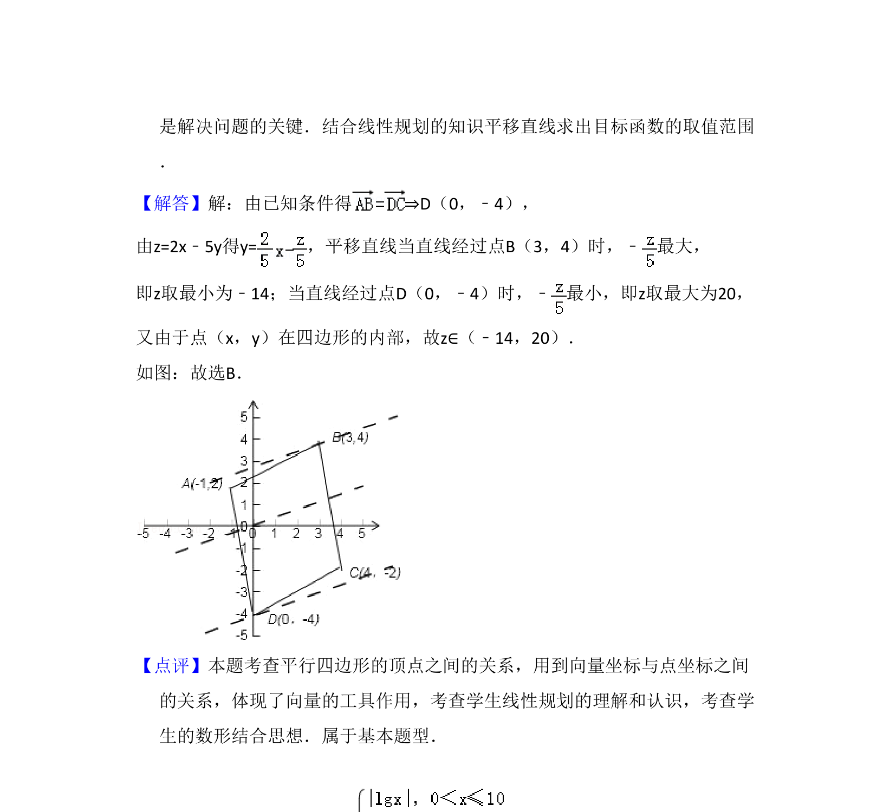

考点：线性规划

已知平行四边形三个顶点，求内部点满足的线性目标函数取值范围


📄 原 PDF 第 7 页：
素材/真题/吉林/2008-2024·（吉林）数学高考真题/2010年高考数学试卷（文）（新课标）（解析卷）.pdf
11．（5分）已知▱ABCD的三个顶点为A（﹣1，2），B（3，4），C（4，﹣2） ，点（x，y）在▱ABCD的内部，则z=2x﹣5y的取值范围是（ ） A．（﹣14，16）B．（﹣14，20）C．（﹣12，18）D．（﹣12，20）
【考点】7C：简单线性规划．菁优网版权所有 【专题】11：计算题；16：压轴题． 【分析】根据点坐标与向量坐标之间的关系，利用向量相等求出顶点D的坐标